Top Section / Bottom Section
The two blocks above and below the time. Each can independently show the weather, the date, or nothing at all — any combination works in either slot.
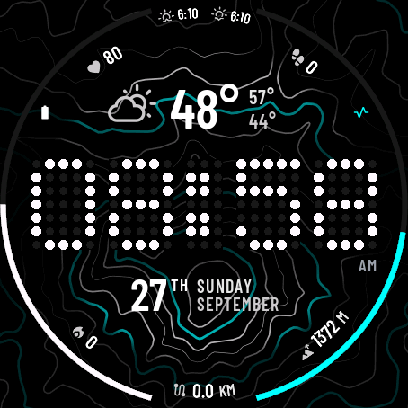
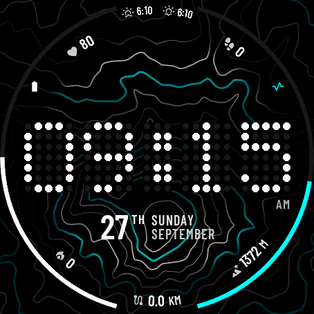
The six numbers around the edge
Six independent slots on the bezel, each showing one metric of your choice. Numbered below in the order they appear in Garmin Connect.
- 1 Top Left — Heart Rate shown here
- 2 Top — Sunrise / Sunset shown here
- 3 Top Right — Steps shown here
- 4 Bottom Left — Calories shown here
- 5 Bottom — Distance shown here
- 6 Bottom Right — Altitude shown here
Full metric list
Heart Rate, Steps, Battery, Distance, Calories, Floors Climbed, Temperature, Feels Like, Humidity, Wind, Rain, UV Index, Body Battery, Recovery Time, Stress, Sleep Score, High/Low Temp, Sunrise/Sunset, Planned Sleep/Wake, Altitude, Pulse Ox, Skin Temp, Pressure, Training Intensity, Weekly Run/Bike Distance, Training Status, Golf, Respiration, Notifications, or blank. A metric shows -- until your watch has data for it, and some (Sleep Score, Training Status, Golf, Run/Bike Distance, Planned Sleep/Wake) need a watch model that tracks them.
Left Ring / Right Ring
Two arcs that sweep around the sides of the face, each filling from 0–100% of whatever it's tracking.
- L Left Ring — Battery shown here (white)
- R Right Ring — Stress shown here (cyan)
Full ring options
Body Battery, Stress, Steps Goal %, Battery, Sleep Score, or blank (hides the ring entirely).
Every color picker uses the same 10 colors
Time, AM/PM, readouts, sections and rings all pick from this same palette. A readout or section's icon and secondary text automatically use a slightly dimmer shade of whatever color you pick.
Map Color
Recolors the map's major contour lines (the bold ones). This is a separate picker — it offers the same 10 colors, minus Mint Green.
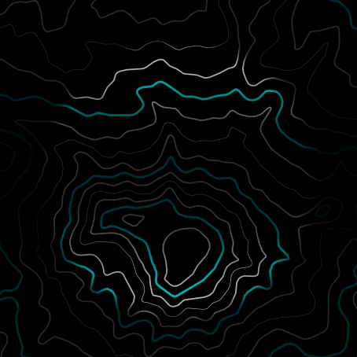
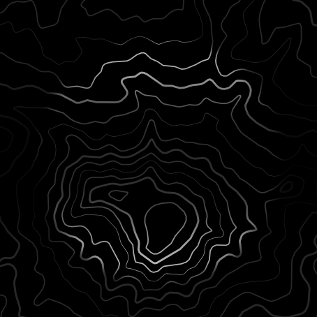
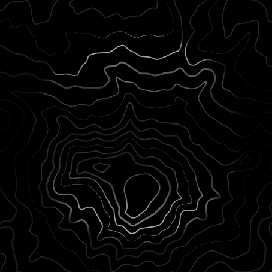
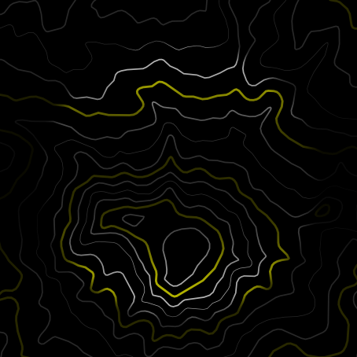
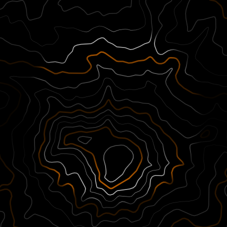
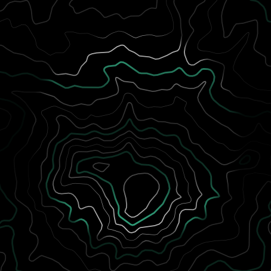
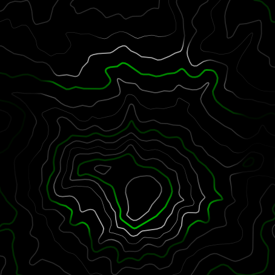
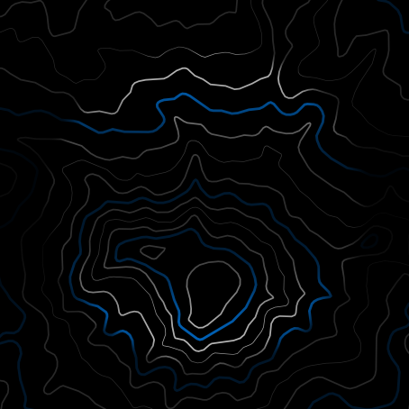
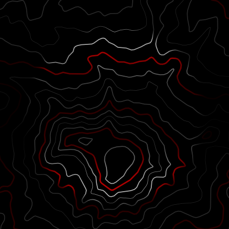
Distance, Temperature & count abbreviations
Distance Unit switches km/mi for distance, weekly run/bike distance, and altitude. Temperature Unit switches °C/°F for weather, feels-like, high/low, and skin temperature.
Calorie / Step Abbreviation sets how big a count has to get before it switches from a full number to a rounded "K" — e.g. with the 10,000 setting, 9,999 shows in full but 12,000 shows as 12K.
Data Refresh Interval
How often the bezel readouts and status rings pull fresh data. The time itself always updates every second while your wrist is raised — this only controls the slower-moving numbers around it. Longer intervals save battery.